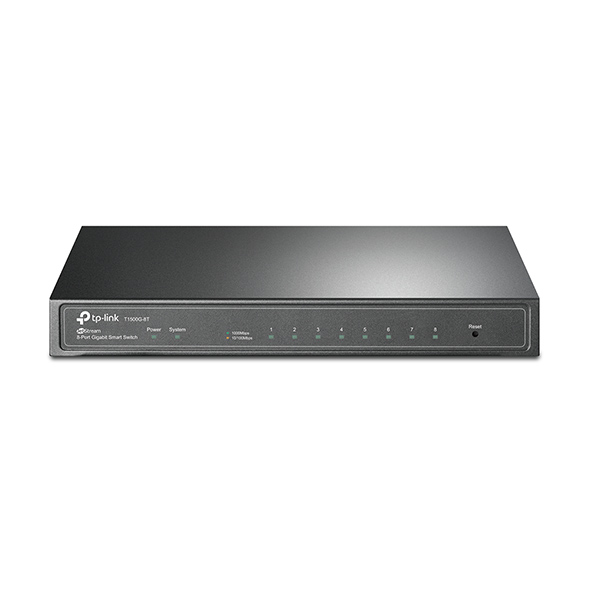
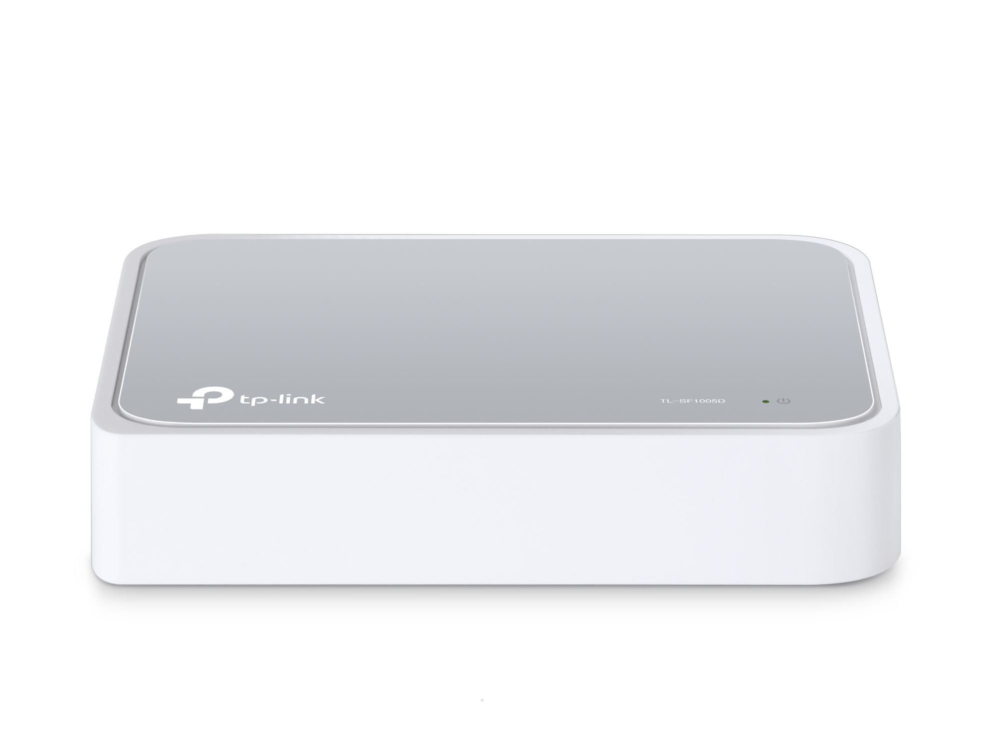

Managed Switch
TL-SX3008F
JetStream 8-Port 10GE SFP+ L2+ Managed Switch
- 10G Lightning-Fast Connections -- 8 x 10 Gbps SFP+ Ports enable high-bandwidth connectivity and non-blocking 160 Gbps switching capacity.
- Integrated into Omada SDN -- Zero-Touch Provisioning (ZTP)*, Centralized Cloud Management, and Intelligent Monitoring.
- Centralized Management -- Easy and convenient management with cloud access and Omada app.
- Static Routing -- Route internal traffic for the efficient use of network resources.
- Robust Security Strategies -- Keep your data safe with systems including IP-MAC-Port Binding, ACL, Port Security, DoS Defend, Storm control, DHCP Snooping, 802.1X, and Radius Authentication.
- Voice and Video Application Optimization -- L2/L3/L4 QoS and IGMP snooping.
- Standalone Management -- Web, CLI (Console Port, Telnet, SSH), SNMP, RMON, and Dual Image bring powerful management capabilities
- Fanless Design
- See More
TL-SG3428XMP
JetStream 24-Port Gigabit and 4-Port 10GE SFP+ L2+ Managed
Switch with 24-Port PoE+
- 10G Lightning-Fast Uplink -- 4 x 10 Gbps SFP+ slots enable high-bandwidth connectivity and non-blocking switching capacity.
- 384 W PoE Budget -- 24 x 802.3at/af-compliant PoE+ ports with a total power supply of 384 W*.
- Integrated into Omada SDN -- Zero-Touch Provisioning (ZTP)**, Centralized Cloud Management, and Intelligent Monitoring.
- Centralized Management -- Cloud access and Omada app for ultra convenience and easy management.
- Static Routing -- Helps route internal traffic for more efficient use of network resources.
- Robust Security Strategies -- IP-MAC-Port Binding, ACL, Port Security, DoS Defend, Storm control, DHCP Snooping, 802.1X, Radius Authentication, and more.
- Optimize Voice and Video Applications -- L2/L3/L4 QoS and IGMP snooping.
- Standalone Management -- Web, CLI (Console Port, Telnet, SSH), SNMP, RMON, and Dual Image bring powerful management capabilities.
- See More
TL-SG3452P
JetStream 52-Port Gigabit L2+ Managed Switch with 48-Port PoE+
- 384 W PoE Budget -- 48 x 802.3at/af-compliant PoE+ ports with a total power supply of 384 W*.
- Full Gigabit Ports -- 48 x gigabit RJ45 ports and 4 x gigabit SFP Slots provide high-speed connections.
- Integrated into Omada SDN -- Zero-Touch Provisioning (ZTP)**, Centralized Cloud Management, and Intelligent Monitoring.
- Centralized Management -- Cloud access and Omada app for ultra convenience and easy management.
- Static Routing -- Helps route internal traffic for more efficient use of network resources.
- Robust Security Strategies -- IP-MAC-Port Binding, ACL, Port Security, DoS Defend, Storm control, DHCP Snooping, 802.1X, Radius Authentication, and more.
- Optimize Voice and Video Applications -- L2/L3/L4 QoS and IGMP snooping.
- Standalone Management -- Web, CLI (Console Port, Telnet, SSH), SNMP, RMON, and Dual Image bring powerful management capabilities.
- See More
Smart Switch

T1500G-8T
T1500G-8T
JetStream 8-Port Gigabit Smart Switch
- 8 x Gigabit RJ45 Ports
- PoE port8 allows receiving power from a PoE source
- Gigabit Ethernet connections on all ports provide full speed of data transferring
- Advanced security features include IP-MAC-Port Binding, ACL, Port Security, DoS Defend, Storm Control, DHCP Snooping, 802.1X, and Radius Authentication
- L2/L3/L4 QoS and IGMP snooping optimize voice and video applications
- WEB/CLI managed modes, SNMP, RMON bring abundant management features
- Dual Firmware Image improves reliability and up-time of your network
- See More
T1500-28PCT
- JetStream 24-Port 10/100Mbps + 4-Port Gigabit Smart PoE+ Switch
- 2 x Combo Gigabit SFP Slots
- Features 24 PoE ports, with total PoE power budget of 192W and useful PoE power management features.
- Integrated security strategy including 802.1Q VLAN, Port Security and Storm control help protect LAN area investment.
- L2/L3/L4 QoS and IGMP snooping optimize voice and video applications.
- WEB/CLI managed modes, SNMP, RMON bring abundant management features.
- Dual Firmware Image improves reliability and up-time of your network.
- See More
Unmanaged Switch
TL-SG1005LP
5-Port Gigabit Desktop Switch with 4-Port PoE+
- 5 x 10/100/1000 Mbps RJ45 ports
- With four PoE+ ports, transfers data and power on one single cable.
- Works with IEEE 802.3af/at compliant PDs.
- 802.1p/DSCP QoS enable smooth latency-sensitive traffic.
- Supports PoE Power up to 30 W for each PoE port.
- Supports PoE Power up to 40 W for all PoE ports*.
- Plug and play, no configuration and installation required.
- See More
TL-SG1016D
16-Port 10/100Mbps Desktop Switch
- 16 10/100Mbps Auto-Negotiation RJ45 ports, Supports Auto MDI / MDIX.
- Green Ethernet technology saves the power up to 80%.
- IEEE 802.3x flow control provides reliable data transfer.
- Plastic case, desktop or wall-mounting design.
- Plug and play, no configuration required.
- See More
TL-SL1226P
24-Port 10/100Mbps + 2-Port Gigabit Unmanaged PoE+
Switch
- 24 x PoE+ 10/100 Mbps RJ45 ports, 2 x Gigabit RJ45 ports, and 2 x combo Gigabit SFP slots.
- High PoE power budget with up to 30 W for each PoE port and 250 W for all PoE ports.
- Up to 250 m data and power PoE transmission range under Extend Mode, ideal for surveillance system.
- Priority Mode ensures high priority of ports 1 - 8 to guarantees the quality of sensitive applications like video monitor.
- Isolation Mode allows one-click client traffic separation for higher security and performance.
- Plug and play, with no configuration and installation needed.
- See More
TL-SG1048
48-Port Gigabit Rackmount Switch
- 19-inch Rack-mountable Steel Case.
- 48 10/100/1000Mbps RJ45 ports.
- Supports MAC address self-learning and auto MDI/MDIX.
- Innovative energy-efficient technology saves power consumption.
- Plug and Play, no configuration needed.
- See More
Home Switch

TL-SF1005D
TL-SF1005D
5-Port 10/100Mbps Desktop Switch
- 5 10/100Mbps Auto-Negotiation RJ45 ports, Supports Auto MDI / MDIX
- Green Ethernet technology saves the power up to 68%
- IEEE 802.3x flow control provides reliable data transfer
- Plastic case, desktop design
- Plug and play, no configuration required
- See More
TL-SG1008D
8-Port 10/100Mbps Desktop Switch
- 8 10/100Mbps auto-negotiation RJ45 ports, supports auto MDI/MDIX
- Green Ethernet technology saves the power up to 60%
- IEEE 802.3x flow control provides reliable data transfer
- Plastic case, desktop design
- Plug and play, no configuration required
- See More
LS108G
8-Port 10/100/1000Mbps Desktop Switch
- 10/100/1000Mbos Auto-Negotiation RJ45 port supporting Auto-MDI/MDIX
- Green Ethernet technology saves power
- IEEE 802.3X flow control provides reliable data transfer
- IEEE 802.3X flow control provides reliable data transfer
- Support 802.1p/DSCP QoS function
- Plug and play, no configuration needed
- See More